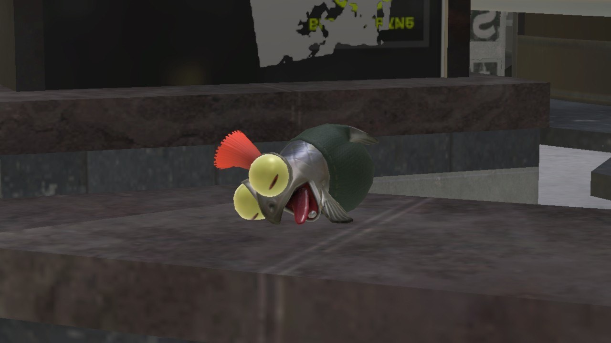

Hungry Little Buddy

You feel that Smallfry is hungry, but he just ate! Will you feed him a second dinner?
Smallfry is excited! Press any key to continue.

Is Smallfry... dead? Click him to find out.

You take a train into the city to find a restaurant Smallfry will enjoy. He is very happy and sings for you!
The End

Oh, thank goodness, he was just asleep, but you can hear his stomach rumble violently while he sings a sad song.
The End...